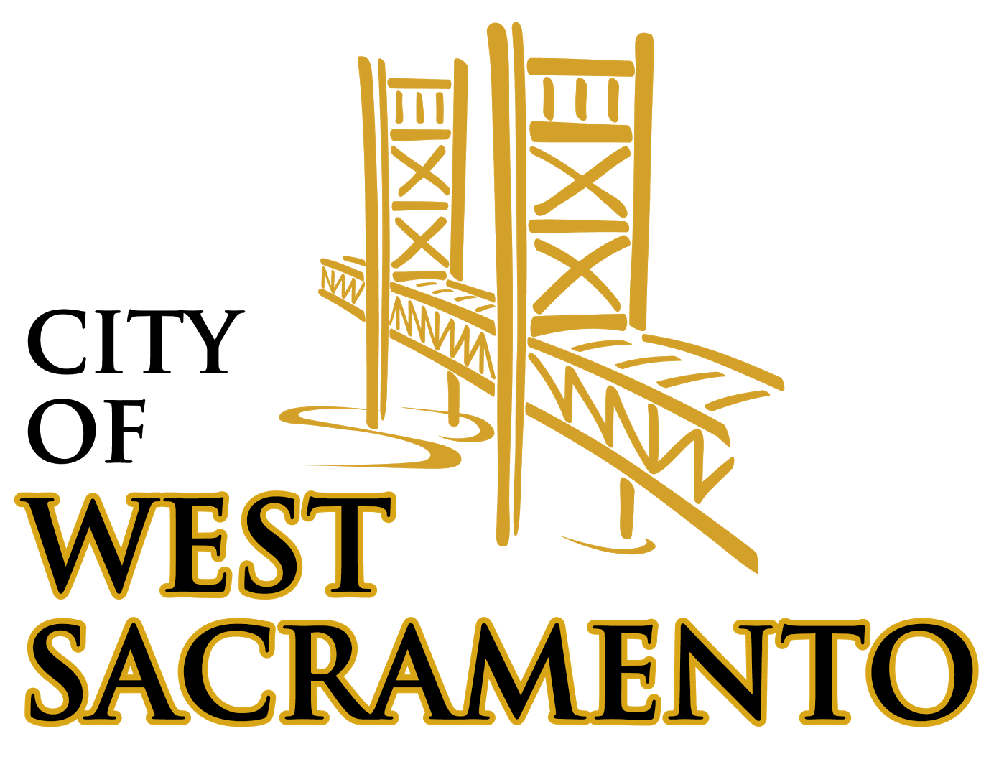
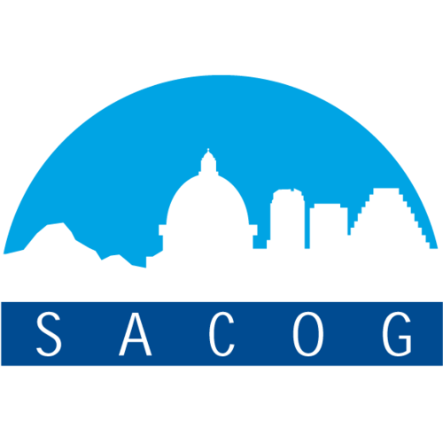

<!-- Footer -->
<footer>
    <div class="container text-center">
        <p>Made by <a href="http://codeforamerica.com">Code for America</a> in partnership with <a href="http://www.cityofwestsacramento.org/">The City of West Sacramento</a> and <a href="http://sacog.org/">SACOG</a>. Icons by Inna Belenkey and Alberto Elizondo from the Noun Project.</p>

        <ul class="logos">
            <li></li>
            <li></li>
            <li></li>
        </ul>
    </div>
</footer>
